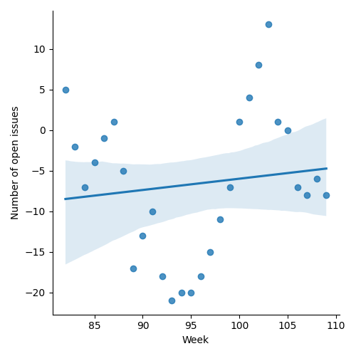
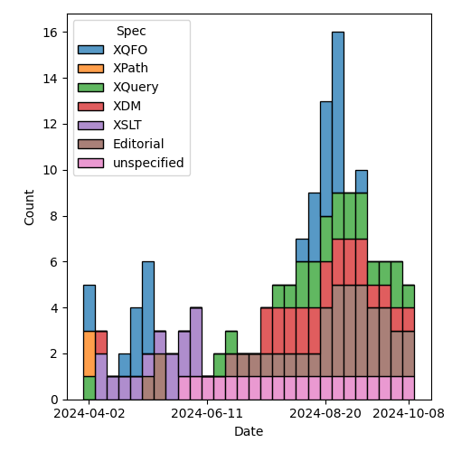
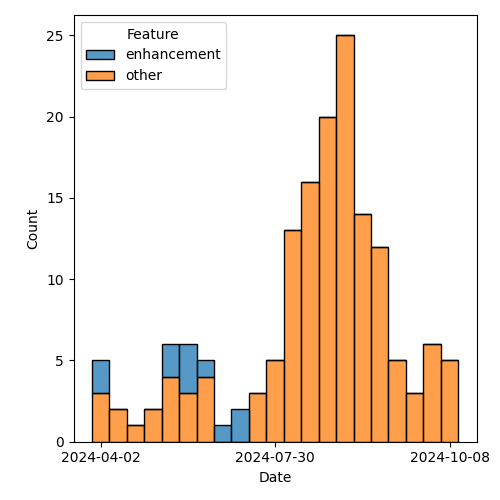

QT4 CG Meeting 094 Minutes 2024-10-15
Meeting index / QT4CG.org / Dashboard / GH Issues / GH Pull Requests
Table of Contents
- Minutes
- Summary of new and continuing actions
[0/8] - 1. Administrivia
- 2. Technical agenda
- 2.1. PR #1472: 1471 JSON Serialization: Sequences on Top Level
- 2.2. PR #1470: 689 fn:stack-trace: replace with $err:stack-trace
- 2.3. PR #1488: 1487 in xsl:array, drop option to construct arrays from arrays
- 2.4. PR #1454: 1449 Relax rules on multiple xsl:includes
- 2.5. PR #1442: 1394 Add new default priority rules
- 2.6. PR #1378: 1375 bugs in pattern syntax
- 3. Any other business
- 4. Adjourned
Minutes
Approved at meeting 095 on 22 October 2024.
Summary of new and continuing actions [0/8]
[ ]QT4CG-080-07: NW to update the build instructions in the README[ ]QT4CG-082-02: DN to work with MK to come to agreement on the fn:ranks proposal[ ]QT4CG-088-01: NW to consider how best to add a dedication to MSM.[ ]QT4CG-088-04: [Someone] needs to update the processing model diagram needs vis-a-vis the static typing feature[ ]QT4CG-089-01: CG to draft a PR that attempts to resolve the operators described in #755 to a smaller number of orthogonal choices.[ ]QT4CG-094-01: CG to revise the proposal to serialize as jsonl[ ]QT4CG-094-02: CG to revise the proposal to haveerr:stack-tracereturn a function item
1. Administrivia
1.1. Roll call [11/12]
DB gives regrets.
[ ]David J Birnbaum (DB)[X]Reece Dunn (RD)[X]Sasha Firsov (SF) [-:35][X]Christian Grün (CG)[X]Joel Kalvesmaki (JK) [:10-][X]Michael Kay (MK)[X]Juri Leino (JLO)[X]John Lumley (JWL)[X]Dimitre Novatchev (DN)[X]Wendell Piez (WP)[X]Ed Porter (EP)[X]Norm Tovey-Walsh (NW). Scribe. Chair.
1.2. Accept the agenda
Proposal: Accept the agenda.
Accepted.
1.2.1. Status so far…
These charts have been adjusted so they reflect the preceding six months of work.

Figure 1: “Burn down” chart on open issues

Figure 2: Open issues by specification

Figure 3: Open issues by type
1.3. Approve minutes of the previous meeting
Proposal: Accept the minutes of the previous meeting.
Accepted.
1.4. Next meeting
This next meeting is planned for 22 October. Any regrets?
None heard.
Note: The QT4CG operates on European civil time. In Europe and the United Kingdom, summer time ends on 27 October. In the United States, summer time ends on 3 November. That means the meeting of 29 October will be one hour later in the United States.
1.5. Review of open action items [3/8]
(Items marked [X] are believed to have been closed via email before this agenda was posted.)
[ ]QT4CG-080-07: NW to update the build instructions in the README[ ]QT4CG-082-02: DN to work with MK to come to agreement on the fn:ranks proposal[ ]QT4CG-088-01: NW to consider how best to add a dedication to MSM.[ ]QT4CG-088-04: [Someone] needs to update the processing model diagram needs vis-a-vis the static typing feature[ ]QT4CG-089-01: CG to draft a PR that attempts to resolve the operators described in #755 to a smaller number of orthogonal choices.[X]QT4CG-093-01: NW to fix the bug in the burndown charts[X]QT4CG-093-02: NW to resolve the F&O search box one way or the other[X]QT4CG-093-03: NW to make dashboard links redirect to the issue/PR when they’re no longer on the dashboard
1.6. Review of open pull requests and issues
1.6.1. Blocked
1.6.2. Merge without discussion
The following PRs are editorial, small, or otherwise appeared to be uncontroversial when the agenda was prepared. The chairs propose that these can be merged without discussion. If you think discussion is necessary, please say so.
- PR #1492: 1312 Add ws:explicit annotations
- PR #1490: 1308 In fn:apply, Correct $array to $arguments
- PR #1489: 1483 return type of fn:error
- PR #1467: Modest editorial corrections to XSLT specs through 2.7
Proposal: merge without discussion
Accepted.
1.6.3. Close without action
It has been proposed that the following issues be closed without action. If you think discussion is necessary, please say so.
- Issue #1473: fn:identity: make it variadic
- Issue #1305: Almost all functions in FO that must process multiple string items, can have as a parameter only a single collation
- Issue #1183: transient() - a function to make functions nondeterministic
Proposal: close with no further action.
Accepted.
1.6.4. Substantive PRs
The following substantive PRs were open when this agenda was prepared.
- PR #1472: 1471 JSON Serialization: Sequences on Top Level
- PR #1470: 689 fn:stack-trace: replace with $err:stack-trace
- PR #1488: 1487 in xsl:array, drop option to construct arrays from arrays
- PR #1454: 1449 Relax rules on multiple xsl:includes
- PR #1442: 1394 Add new default priority rules
- PR #1378: 1375 bugs in pattern syntax
2. Technical agenda
2.1. PR #1472: 1471 JSON Serialization: Sequences on Top Level
See PR #1472
CG introduces the PR.
- CG: The other serialization methods allow a sequence, should we do the same for JSON?
- … The changes are all in serialization
- … Empty sequences are serialized as null, but we can change what it means to have a sequence.
- … If you’re not at the root level, it would still be an error. So a sequence in a map can’t be serialized. We allow arrays, but if you also allowed sequences, they distinction would be lost.
- RD: Is this just about making the multiple json objects serialize with a line separator?
- … There’s a JSONlines MIME type for this:
application/jsonl - … Would it make more sense to support that as a serialization option?
- … There’s a JSONlines MIME type for this:
- CG: For the JSON output method in general, we could think about adding new parameters.
- … This will be available for all methods and we already have json-node-output-method for example. Do we want to add more parameters that only apply to one method?
- RD: I was thinking of a separate method type. If you had this as the result of
a web request that was serving
application/json, this would produce invalid JSON. Usingjsonlwould make it easier for applications to do the right thing. - CG: We already have the validity challenge for other methods, like HTML.
- JLO: I was thinking along the same lines as RD. I do think we should support that.
- … I expect we can set the MIME type as well and we just need to specify the separator. An example would be really helpful.
- … I like this already, but I’d like
jsonlas well.
- CG: One problem in my proposal is that empty sequence is always null. That’s not ideal.
- MK: I have encountered jsonl in the wild. I think we should support it on both
input and output. I’ve processed it successfully with unparsed-text-lines and
then parsing each line. That works adequately.
- … On serialization, I’m torn by the edge case of the empty sequence. It’s an edge case but it’s somewhat unsatisfactory. I appreciate that adding new parameters or methods is more work, but the fact that we get the wrong output for the empty case strikes me as evidence this is the wrong solution.
- JLO: I would expect an empty sequence to serialize to
null. - MK: But it doesn’t round trip. If you reparse it you’ll get a single item containing null instead of a sequence of zero length.
Some discussion of the meaning of null and empty sequences in the context of JSON and jsonl.
ACTION: QT4CG-094-01: CG to revise the proposal to serialize as jsonl
2.2. PR #1470: 689 fn:stack-trace: replace with $err:stack-trace
See PR #1470
CG introduces the PR.
- CG: This has been discussed before. The consensus in Prague was to provide the
stack trace in the errors but not as a separate function.
- … That’s what I’ve done in this PR.
- … It’s up to the implementation to figure out what to return that can be interpreted as a stack trace.
- … The stack race is available as an error variable and would be part of the map.
- MK: My concern is that for performance, one would only want to generate the
stack trace if it’s needed. Especially formatted as a string.
- … It’s feasible to make this entry in the map somehow lazy, but there’s a bit of implementation complexity there. Usually, I argue we shouldn’t change the design implementors, but here I think a function might be better.
- … It would make it clear to users that the stack trace is being generated on demand.
- CG: I thought about that, I like it.
Some clarification about the function; it’s a variable returns a function item, not a stand-alone function.
- JWL: Could we argue that it doesn’t have to be a string? A structured form?
- CG: It could return
item()* - MK: Yes, but the user has to know what they can do with it. Knowing that it’s a string is useful.
- JWL: If you’re going to produce a tree or something, it would be nice to have more structure.
- CG: Even if it’s a string, you can’t rely on what it contains unless you know the implementation.
- MK: What would an implementation do if it wanted to provide a more programmatic stack trace.
- … This could be done as another field in the map. That can be an implementation-dependent structured form.
- JWL: We have a variable who’s name is map that has a map. That can contain anything you like.
- MK: Yes, I assume the map is extensible.
- SF: What confuses me is that this function has been taken out of the context of providing structured values.
- … Trouble shooting is just one use case. Runtime checks, and other things, are useful. So the function was useful outside the context of a try/catch block.
- … In addition to the call stack, for each item on the stack, you want access to the variables in that stack frame.
- … It doesn’t look like that’s covered here.
- MK: This is consciously scaling back to something simpler.
- CG: I think the kind of access described is something that can be handled by
implementation-defined functions. The specification gives you so much freedom
that it’s difficult to define a function that returns similar things in wholly
different implementations.
- … And completely unconstrained return values don’t make sense in the standard.
- SF: If it won’t be a part of the standard, then it won’t be standardized. Languages like JavaScript have this in the standard so that it’s accessible across implementations.
ACTION: QT4CG-094-02: CG to revise the proposal to have err:stack-trace return a function item
2.3. PR #1488: 1487 in xsl:array, drop option to construct arrays from arrays
See PR #1488
MK introduces the PR.
- MK: This is a small push back on what we agreed last week.
- … One of the options that I proposed was questioned and when I tried to implement it and add test cases for it, I came to the conclusion that the questioning was correct.
- … The option that allows a sequence to be one or more arrays is dropped.
- … That’s carried through to examples.
- … If you’re constructing nested arrays, you have to be explicit with
xsl:array-member.
- JWL: Is this analagous to map:entry?
- MK: Not exactly, because xsl:map will merge the maps.
Proposal: accept this PR.
Accepted.
2.4. PR #1454: 1449 Relax rules on multiple xsl:includes
See PR #1454
- MK: It emerged that people have problems with multiple xsl:includes.
- … Circular dependencies are forbidden, so you can’t have mutual dependencies.
- … This means tooling can have trouble finding the templates.
- … This PR says that the loops in includes are ignored.
- … This doesn’t apply to
xsl:importbecause there are extra semantics.
- JK: If MSM were here, I’m sure he’d have some profound questions for us.
- … There are many times where I’ve been grateful for the restriction because it helps catch errors.
- … It’s hard for me to see what the implications are.
- MK: What it does is that enables a style of coding in which each module
declares its dependencies.
- … If you choose to, every module can include the things it depends on.
- … This allows cyclic or diamond dependencies that are currently forbidden.
- … Some folks would prefer that style of coding.
- JWL: Is there any scope in the spec for saying this is an implementation-dependent option to make it an error for backwards compatibility?
- MK: It’s not clear to me that there would be any benefit from that.
- JWL: I suppose you can always do it yourself by analyzing the stylesheets.
- JLO: I think cyclic dependencies are something you might want to catch. It’s not usually what you want to have. Later, you said, that it enables a coding style that allows you to refer to all your dependencies.
- MK: If you’re familiar with a language like Java or C#, you’re used to using
importorusingto identify your dependencies. Cycles aren’t a problem there. It’s making the names available and there’s no other way. It’s a different way of thinking about includes than the historical XSLT model. This just enables a way of using includes that’s familiar to more people. - RD: This is similar to include guards in C and C++. Where, if you haven’t included a module already, it gets called in and the declarations added. But if you include it a second time, then adding those declarations gets skipped. That does allow the diamond structure where you can have multiple files referencing some additional functions.
- WP: I’m not opposed to the change, but I share JK’s reservations.
- MK: In nearly all cases currently, doing multiple xsl:includes will give you an error. You can have them if you have multiple template rules (but no named components), but that’s very likely to be confusing and not expected.
- WP: I think this is an improvement. But it could lead to surprises. If the order sometimes matters, that’s when it’s a problem. We’re running into trouble where there are ambiguities.
- SF: XSLT is a template language, because we generate content, we can just include more content from another place. This include is not the same as import. When you’ve been discussing cyclic dependencies. The difference goes away when do the includes.
There has been some objection and a request for more time.
We’ll return to this next week.
- DN: I compare xsl:include and xsl:import to preprocessing instructions. With the ability to use xsl:transform and include XQuery modules. Everything that can be done, can be done as a preprocessing step. I think that we could think about some sort of general macro preprocessor to our languages.
2.5. PR #1442: 1394 Add new default priority rules
See PR #1442
- MK: We’ve introduced new forms of element and attribute tests, but we never
defined default priorities for them. I’ve done that.
- … I think
element(a|b)should be the same as the union pattern. - … The wildcard form is just adding new rules that squeeze into the gaps.
- … I think
MK reviews the prose.
Proposal: accept this PR
Accepted.
2.6. PR #1378: 1375 bugs in pattern syntax
See PR #1378
- MK: The actual change is to patterns involving function calls.
- … It fixes a 3.0 bug, a sort of documented one in th spec.
- … We had a note about “the peculiarity of this grammar”, a bug in other words!
- … We’re fixing that bug by allowing two steps in a row to be function calls.
- … The grammar now allows any function call and there are semantic rules that restrict what functions you’re allowed to use.
- JLO: Is this only in XSLT?
- MK: This is only XSLT.
- JWL: I haven’t been checking the pattern aspect of the grammar, but I will.
Proposal: accept this PR
Accepted.
3. Any other business
- DN: I think we should think carefully about what options we leave in an options map. We should consider what the important options are and make sure they’re more visible.
- JLO: I think it’s a real concern.
- MK: Yes, there’s a lot of work that needs to be done in tutorials and documentation to help folks understand what’s there and how to use it.
Some further discussion of the case of many different options that are only exposed through keys in option maps.
- RD: I like the SVG primer document because it gives you a good overview. It may be useful to have something similar to that.